Johannes Trithemius — Clavis Generalis Triplex: the ciphers, solved
For four centuries the Steganographia ciphers were read as demonic conjuration.
They are not. Each modus is a plain explicit-alphabet substitution on a 24-letter
alphabet a b c d e f g h i k l m n o p q r s t v x y z w (no j, u=v,
w last): the book prints each modus's Alphabetum, and the Literae significantes
decode, letter for letter, through that alphabet's inverse into a plain German Intentio.
Below, eleven worked examples spanning the full range of modi present in the facsimile —
the simple modi (II–XI) and the high modi (XXXII–XXXIX) — decode back into the
ordinary German the book itself states as the message.
Modus II — Clavis facsimile p.251 62% recovered
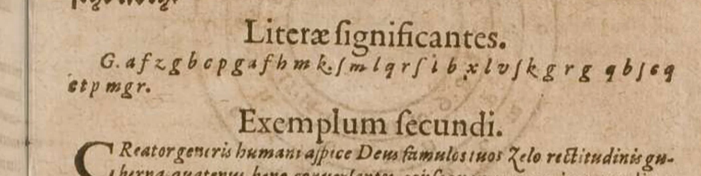
gafzgbcpgafhmksmlqrsibxlvsskgrgqbseqetpmgrichbiderichkomvonspvldxnvvvmipisdvgsgxroipichbittedichkommvonstvndanzvmiresthvtsehrnothModus V — Clavis facsimile p.254 65% recovered
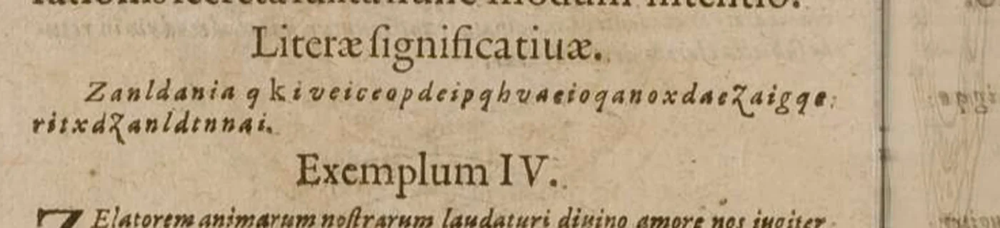
zanldaniaqkiveiceopdeipqhvaeioqanoxdaezaigqeritxdzanldtnnaiderpherneqknbingisthintqmbeinsqersoheidenlqixntohderphtrrenderpfarrherzvonbingistvmbeinsverschiedenlvgnachderpsarModus VI — Clavis facsimile p.255 62% recovered
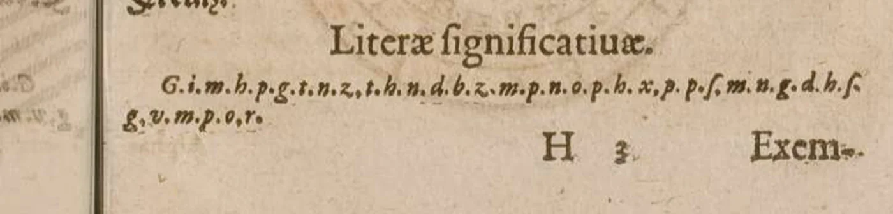
gimhpgtnzthndbzmpnophxppsmvgdhsgvmporhexemmornvmbsebnsigervstvndvvsrcminsmcrvtznkdkrmorgenvmbseygervstvvndwartmeineramkrevzModus X — Clavis facsimile p.261 75% recovered
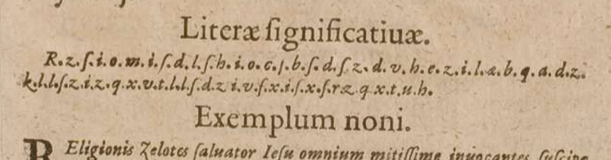
rzsiomisdlshiocsbsdszdvhezilabqadzkllszizqxvtllsdzivsxisxsrzqxtvhdiesaxsenlersameleneingroislklcknitlleisichgfllenisgehsehedichfgrdiesachsenversambleneingrosvolckvtweissichoffenesgehesiedichfvrModus XI — Clavis facsimile p.263 77% recovered
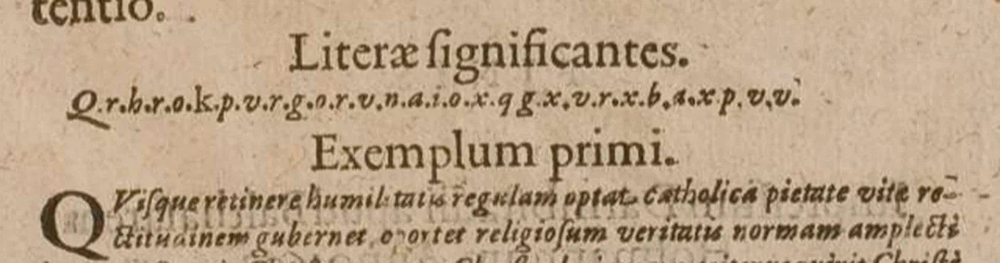
qrhrokpvrgorvnaioxqgxvrxbaxpvvdesebtcherbehalibidriheimlichhdiesebvcherbehaltendieheimlichThe high modi (XXXII–XXXIX) — table-inversion
These cipher lines were transcribed by vision OCR and decoded by explicit-alphabet inversion, the same mechanism as the simple modi. One line — Modus XXXV (p.241) — defeated the OCR (dense, isolated Fraktur letters that every model read as the alphabet table or adjacent prose) and was recovered by human eye-reading of a zoomed facsimile crop against a Fraktur reference key. The "alternating words / null rhythm" in each rule describes how the cipher stream was built from the cover letter; once transcribed, decoding is pure table inversion.
Modus XXXII — Clavis facsimile p.237 78% recovered
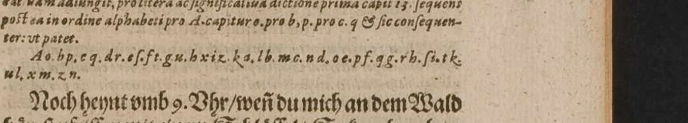
Ao bp cq dr es ft gu hx iz ka lb mc nd oe pf qg rh si tk ul xm zndeqxfzdklcplxhlldrlczqxodrfcllobrxehfikftfzttfdczkfzdfciqxbliifbieaecxfhopnlczbnochpintvmbvhrvvndvmichandpmvvaldhorpstpfpiffpnmitpinpmschlvssplsokomhprabzvmilnochhewtvmbvhrweisdvmichandemwaldhorestpfeiffenmiteinemschlvsselsokomherabzvmirModus XXXIII — Clavis facsimile p.238 89% recovered
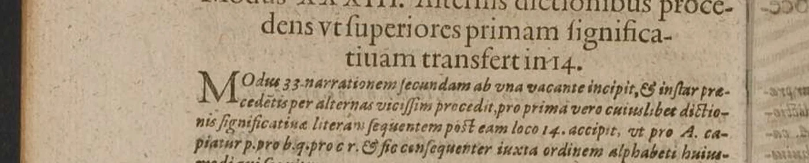
Ap bq cr ds et fu gx hz ia kb lc md ne of pg qh ri sk tl um xn zotcaklefrzetmmmtekmrzazemfixpelommfctztsteazdmatcmtilipmltiliaerblpmrzxtiemmtaemesaklmmmesticarzelistnochnevvvensvchihnvorgantzvvolehedenihmvielvertravtertrincktavchgernvveinvndistvvvnderlicheristnochnewversvchihnvorgantzwolehedennihmvielvertravtertrinketavchgernweinvnndistwvnderlichModus XXXV — Clavis facsimile p.241 87% recovered
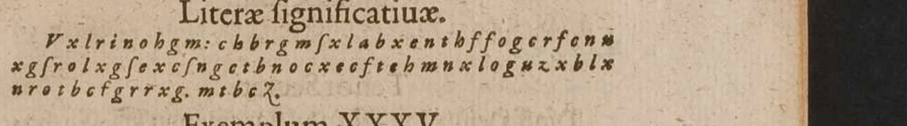
Ar bs ct du ex fz ga hb ic kd le mf ng oh pi qk rl sm tn uo xp zqtranscribed by eye — OCR-defeating Fraktur):
vxlrinohgmcbbrgmsxlabxenthffogcrfcnxxgsrolxgsexcsngctbnocxecftehmnxlogxzxblxxrotbxfgrrxgmtbczderaptvonsihhansbergheltcommvniamiteenbavrenbleibtnichtvielimclostervnefehreeavchemnaaenschifderabtvonsiohannesbergheltcommvniamitdenbawrenbleibtnichtvielindemklostervndfehretavchimnarrenschiffModus XXXVII — Clavis facsimile p.243 92% recovered
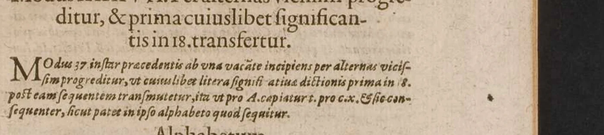
At bu cx dz ea fb gc hd ie kf lg mh ni ok pl qm rn so tp uq xr zsetxkvoaqhdtpiqickolnkxdaianqqegzexdanopaxdaiokvtgzanzexdhkactifkhhaidqpzexdbknehiacobsevmhatnvngosprochenervvildicherstechensobalderdichmoegankommenhvtdichforimiacobsevmhatnvngesprochenerwolldicherstechensobalderdichmogankomenhvtdichvorihmModus XXXVIII — Clavis facsimile p.244 86% recovered
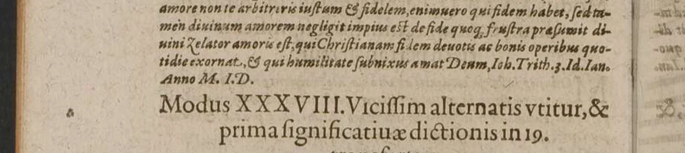
Au bx cz da eb fc gd he if kg lh mi nk ol pm qn ro sp tq vr xs ztrrfpbavpenkopzerrboqrfbhrxbhrlkafoobafkabfkbivxaabpbkrkakfimqpfzealzevkeroafonhppbfboabfkcnpqdrabooobrkavvisedashqnrschvvertvielvbelvondirredindeinemabddesenvndnimptsichdochanhvrdirqlsseierdeinfqstgvderrrevndwissedashansschwerdvielvbelvondirredindeinemabwesenvndnimptsichdochanfvrdiralsseyerdeinfastgvterfrevndModus XXXIX — Clavis facsimile p.245 70% recovered
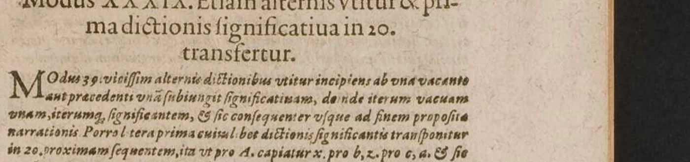
Ax bz ca db ec fd ge hf ig kh li mk nl om pn qo rp sq tr vs xt zubgpsgprecgafpezlfapzfhmkkelgqrkglpxrbsbcqqlglgesxlbepxlqafixegqrbgafvssepbpclabclmbepglcssgeeodclelgqvsqerclfscbbgafdirvirtgeichrgbnhcrbhkommgnistminratdvdessninigvandgranschlagistdichzvvgrdrencdenodgrinevviggqfengniszvsgtenhveddichdirwirdgeschriebenherzvkommenistmeinrathdvthvstnichtwannderanschlagistdichzvvertrenckenoderinewigegefangnvsszvsetzenhvtdichThe cipher lines decoded here are from the 1608 Frankfurt Clavis Generalis Triplex (Balthasar Hofmann, for Johann Berner) — Trithemius's own key to the Steganographia. The Steganographia itself was composed around 1499, first printed in 1606 (Frankfurt), and placed on the Index in 1609; the corpus's Steganographia witness is the 1621 Darmstadt edition (Hofmann, printing under the Latinized name Aulaeander, again for Berner). For the foundational cryptanalysis — the independent solutions of Book III — see Thomas Ernst, Daphnis 25:1 (1996), and Jim Reeds, Cryptologia 22:4 (1998). The decryption shown here applies the mechanism those authors established to the facsimile of the 1608 Clavis; the cipher lines are transcribed by vision OCR (with the single exception of Modus XXXV, p.241, which was eye-read), but the substitution-inversion method itself is not a new cryptanalytic result.